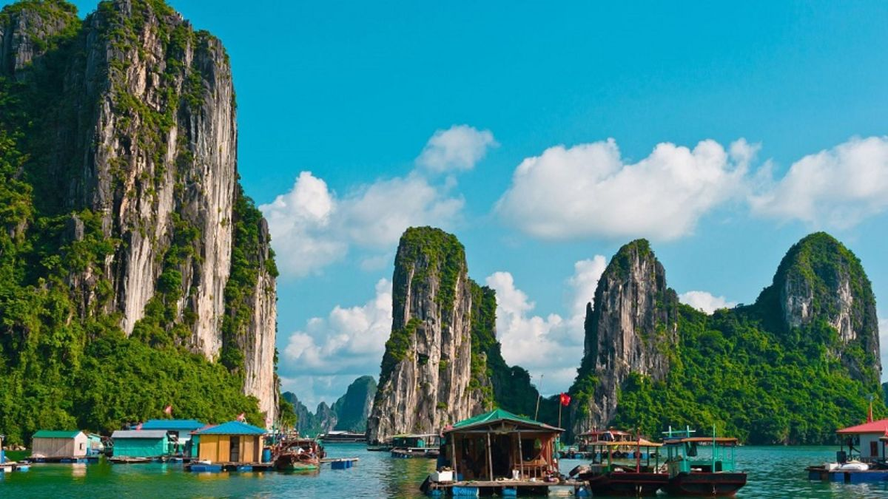

GIỚI THIỆU QUẢNG NINH
Vùng đất của biển xanh, núi đá và những kỳ quan thiên nhiên.
Vẻ đẹp thiên nhiên
Vùng đất của biển xanh, núi đá và những kỳ quan thiên nhiên.

Quảng Ninh là tỉnh thuộc vùng Đông Bắc Việt Nam, nổi tiếng với Vịnh Hạ Long - Di sản thiên nhiên thế giới.
Địa hình đa dạng từ núi cao, đồng bằng ven biển đến hơn 2.000 hòn đảo lớn nhỏ.
Đây là địa phương có nguồn tài nguyên khoáng sản phong phú, đặc biệt là than đá lớn nhất Việt Nam.
Với đường bờ biển dài và nhiều thắng cảnh nổi tiếng, Quảng Ninh là điểm đến du lịch hấp dẫn của cả nước.